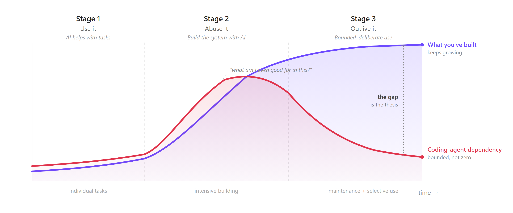
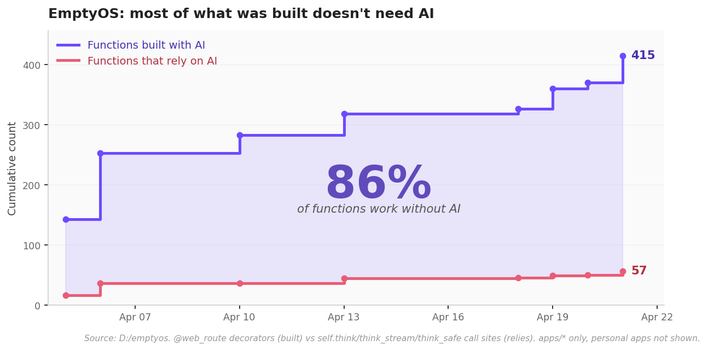
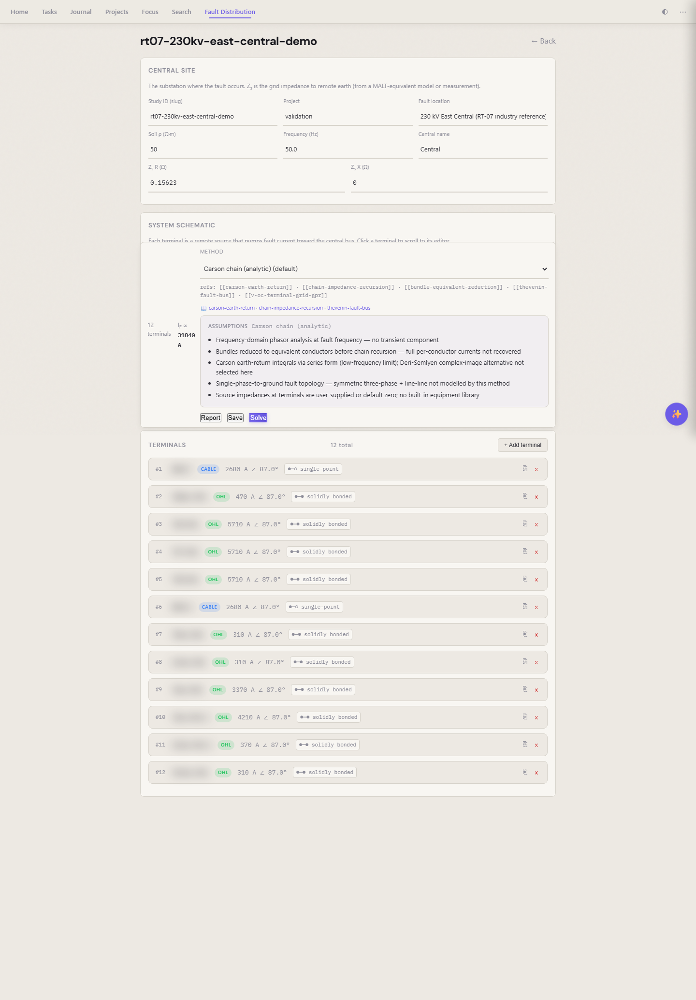
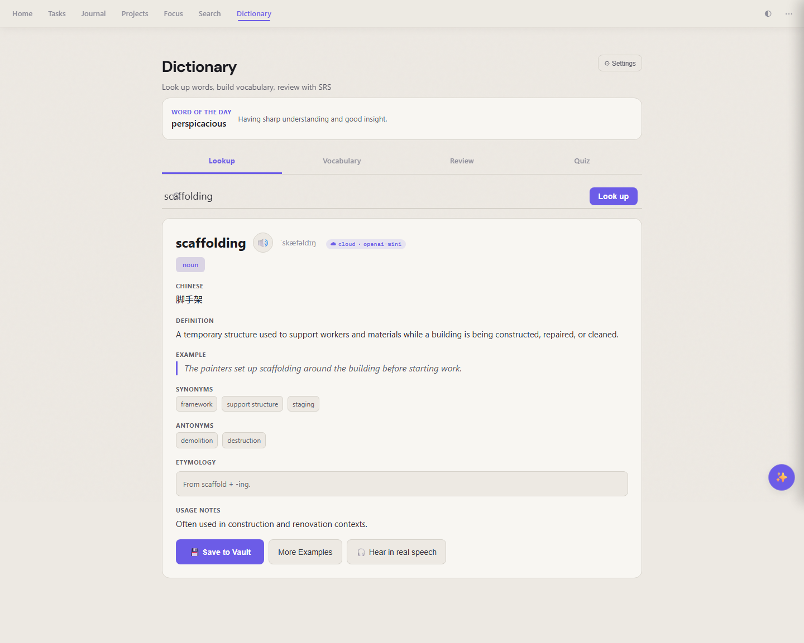
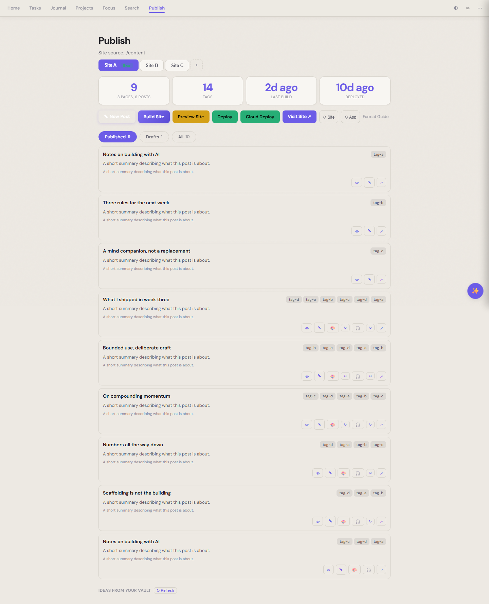
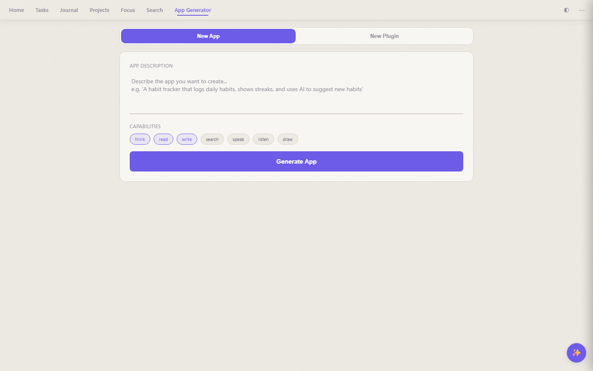
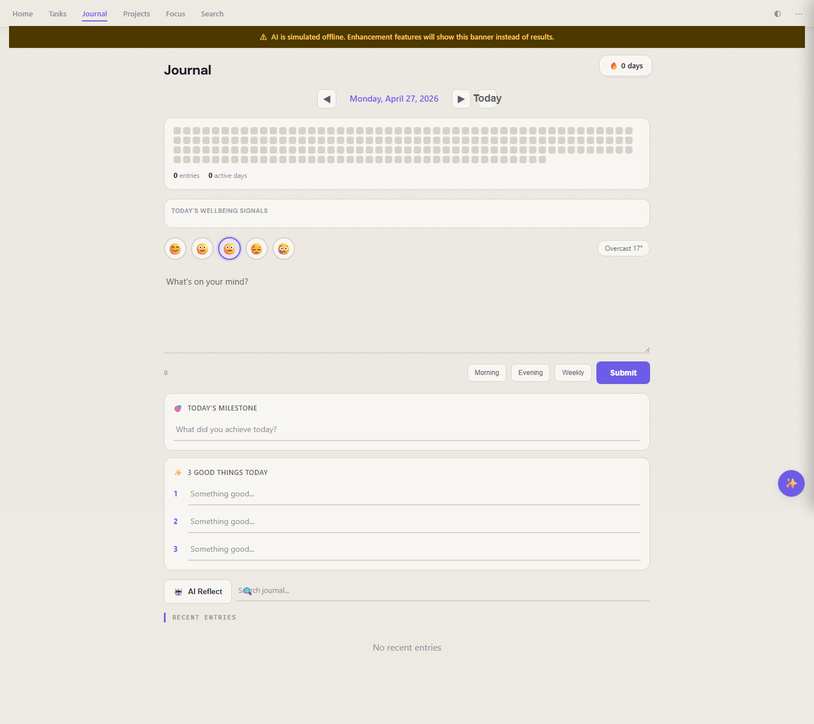

A Healthy Relationship with My AI Coding Agent: Use It, Abuse It, Outlive It
A confession¶
I'm in love with my AI coding agent. I spend hours with it every day. We've made amazing things together.
And like any relationship that goes deep, a quiet question started showing up: am I leaning too hard? Could I survive this partner cheating on me, getting expensive, getting nerfed, or walking away?
I love it. I use it. I abuse it. I depend on it. And then I have to ask the grown-up question: do I need to leave it? Or change how we live together?

The arc. The counter-intuitive beat is at the far right — dependency on the coding agent coming down, even as the system keeps growing.
Use it¶
Stage one is what everyone is doing. The coding agent helps you with small, specific tasks: write a function, fix a bug, explain code you didn't write. Per-request, no guilt, move on. The debate over whether to use one is over. Stage one isn't the story.
Abuse it¶
Stage two is what almost nobody talks about honestly. You stop using the coding agent for individual tasks and start using it to build the system you actually need. You push it for months. You generate code you couldn't generate alone. You burn tokens the way a founder burns runway — deliberately, because something is being built on the other side.
This is dependency, on purpose. You go faster than you could otherwise. You generate structure you couldn't have generated alone. That's the deal.
It feels great until it flips. Somewhere mid-phase you look at a codebase you don't fully understand and a quiet question shows up: what am I even good for in this? The doubt is part of the stage. You can't skip it. The resolution isn't reassurance — it's stage three.
The abuse has to be for something. Otherwise all you've built is dependency.

One month with the coding agent, daily. Purple: every endpoint built. Red: the subset that calls an AI provider at runtime. The big spike is the abuse phase. The dip in week two is a deliberate restructure (fewer apps, cleaner). After that, steady honest growth — but the red line barely moves. Today: 696 endpoints, 40 of them AI. 94% of what was built doesn't need AI to run. The gap is the thesis.
Outlive it¶
Stage three is quiet. What you built during the abuse phase starts working on its own — and what felt like dependency turns out to have been scaffolding. The coding agent steps back into its original role: a helper for specific tasks, not a load-bearing pillar.
I applied this outlive lens to EmptyOS — a mind companion that thinks and creates with you, not for you — and "outlive" turned out to mean three different things in practice.
Shape 1 — Coding agent retired, AI not needed at runtime¶
Most of the apps. Engineering calculators, planners (calendar, task, journal, expense), system plumbing. Generated with the coding agent in heavy collaboration. Run on plain Python, plain markdown, plain SQLite. The coding agent could disappear tomorrow and these would keep working forever. A few have an optional AI sprinkle — expense will categorize a receipt; journal will reflect on your week — but turn the AI off and they politely show a yellow banner and keep working.
This is the largest category, and most people don't expect it. Most of what humans actually need from software isn't AI-shaped — it's structured, deterministic, written once and used forever. The coding agent just helped get it written faster.

Shape 1: numbers in, math, numbers out. No model in the loop, no API call, no token spent. Disconnect every AI in the system; this page returns the same answer tomorrow.
Shape 2 — Coding agent retired, but the tool's job is to compose AI at runtime¶
Smaller and very specific. The voice assistant. The dictionary that pronounces words and quizzes you. The English-speaking partner. The reader that summarises long articles. The publish app that generates podcast episodes and cover images. These exist because there are language models and speech APIs to compose.
For these, the coding agent is gone — but I'm still in a relationship with AI in general through them. Kill the LLM and these go dark. That's an honest dependency, not a hidden one. I'd rather depend on a swappable model API than on the coding agent that wired it in.

Shape 2, small end: the dictionary, mid-lookup of "scaffolding" (apt). LLM defines, speech API pronounces. Two capabilities composed; that's all the app is.
The same shape at a bigger scale: the publish app generates a cover image and a two-host podcast episode for every post. Three AI capabilities composed — image gen for the cover, an LLM to script the dialog, TTS to render two voices — into a single artifact per row.

Shape 2, bigger end: the publish app's post list. Each row has a generated cover image and a podcast that didn't exist before the model stack got involved. The coding agent that wired this is gone; the runtime depends on three swappable model APIs.
Shape 3 — The forge. Still needs the coding agent¶
Smallest, and the relationship that genuinely cannot be outlived. The agent app, the app generator, the model-bench — meta-tools whose whole purpose is to keep generating more EmptyOS. If I want a new app tomorrow, the coding agent is how it arrives.
But here's the move: every cycle through the forge moves the rest of the system further into shape 1 or shape 2. Every new calculator becomes another piece of standalone infrastructure. The forge keeps the coding-agent relationship open forever — but bounded. I only call on it to make new things, not to run the old ones.
That's the relationship I actually want. Not abandonment. Not dependency. Specific, bounded use.

Shape 3: app-gen. Cannot outlive the coding agent because its job is to call the coding agent. The door I leave open on purpose.
The test¶
Here's the question that tells you which stage you're actually in. Take whatever the coding agent has been helping you build and ask: if every AI in my stack went dark tomorrow — coding agent and runtime models both — what would still work?
- Nothing → stage one or early stage two.
- The basics work, the polish is gone → late stage two. The abuse is producing. Keep building.
- You'd hardly notice → you've reached stage three for the parts that are shape 1. Now sort the rest into shape 2 and shape 3 honestly.
You don't need to actually run the test on your own system to see what stage three looks like in practice. The live EmptyOS demo at demo.binbian.net has a Simulate Capability Offline switch. Flip it. Watch what stays standing, what shows a banner, and what would only come back when someone sits down with the coding agent again.

The journal, AI turned off. The yellow banner names the missing capabilities; everything you'd actually use the journal for still works underneath. The system didn't collapse — it just went quiet.
What humans still do better¶
A coding agent is extraordinary at speed, scale, and patience. It's not good at judgment under genuine ambiguity. Not good at taste — knowing when something is done. Not good at refusal — saying no, killing the feature, not shipping. And especially not good at deciding which of the three shapes a new app should be. That's a values call, and values are yours.
You use the coding agent. You abuse it. And then, if you do it right, you end up with a system where most of what you built doesn't need it at all, some of it composes other AI honestly, and a small forge stays open for the next round. Stage three is when you stop being a prompt-manager and go back to being an engineer — one who happens to keep an extraordinarily capable collaborator on call.
That's a healthy relationship. It's also good engineering.
Listen to this post¶
⬇ Download as video — share on LinkedIn, X, etc.
AI-generated podcast discussion of this article